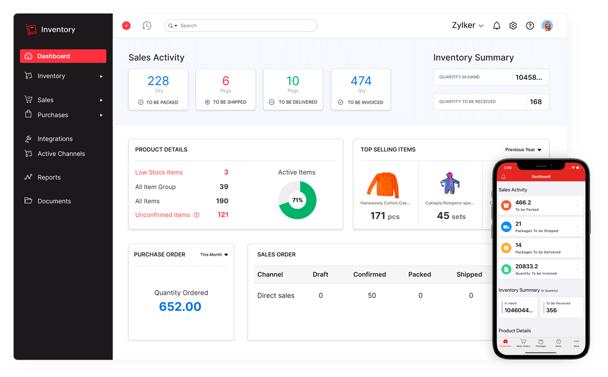
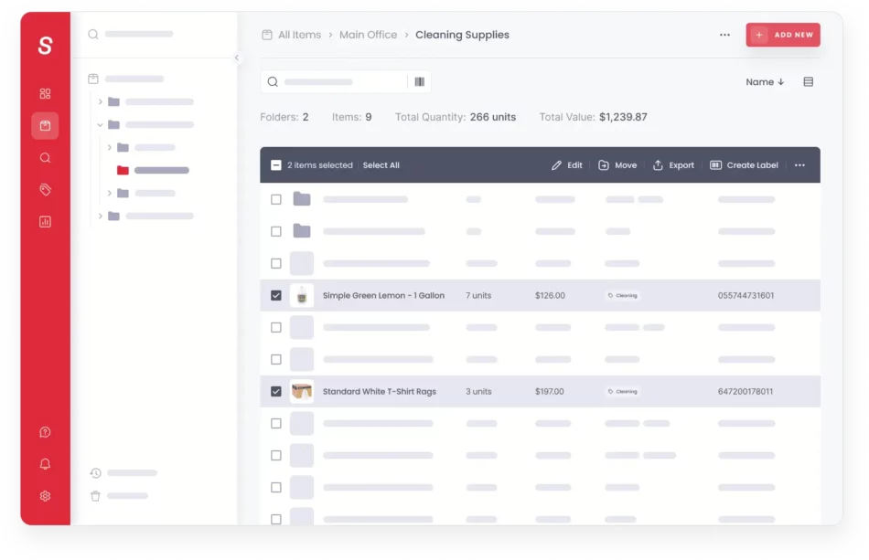

This section presents existing systems that are related to the Warehouse Ordering and Inventory System. These systems were reviewed to understand common features such as inventory tracking, order management, warehouse monitoring, item records, payment handling, and reporting. The following systems provide useful references for improving the design and functionality of the proposed system.

Zoho Inventory is an online inventory management system designed to help businesses manage orders, track inventory, and monitor warehouse operations. It provides features such as sales and purchase order management, multi-warehouse tracking, barcode scanning, item monitoring, reports, and online payment integrations. This system is useful for businesses that need to manage stock movement and customer orders in one platform.
Compared to Zoho Inventory, the proposed Warehouse Ordering and Inventory System focuses on a simpler desktop-based setup using Java and MySQL. Both systems include inventory tracking, order management, customer records, and payment-related functions. However, the proposed system is designed for a smaller warehouse environment where admins, staff, receivers, and customers have specific roles inside the system.
Odoo Inventory is a warehouse management system that provides real-time inventory visibility, product location tracking, replenishment, barcode scanning, delivery orders, receipts, and internal transfers. It is commonly used by businesses that need to manage different warehouses and monitor product movement from receiving to delivery.
The proposed Warehouse Ordering and Inventory System is similar to Odoo Inventory because it also manages stock records, item quantities, orders, and warehouse-related processes. However, Odoo is more advanced and cloud-based, while the proposed system is a more focused academic system that handles basic inventory, customer orders, stock requests, receiver approval, reports, and payment confirmation.

Sortly is an inventory management application that allows users to organize items, add product details, upload item photos, scan barcodes or QR codes, receive low-stock alerts, and generate inventory reports. It is useful for businesses that need a visual and easy-to-use system for tracking supplies, tools, materials, and equipment.
The proposed Warehouse Ordering and Inventory System shares similarities with Sortly because it also stores item details, categories, quantities, prices, and item pictures. Both systems help users monitor available stock and organize warehouse items. However, the proposed system also includes customer ordering, payment confirmation, customer service messages, role-based access, and receiver workflows, making it more focused on warehouse ordering operations.
Zoho Inventory. https://www.zoho.com/in/inventory/
Odoo Inventory. https://www.odoo.com/app/inventory
Sortly. https://www.sortly.com/